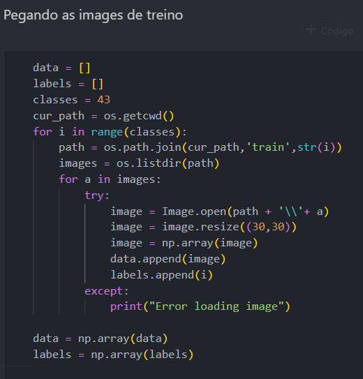
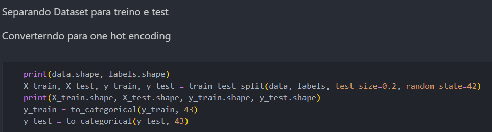
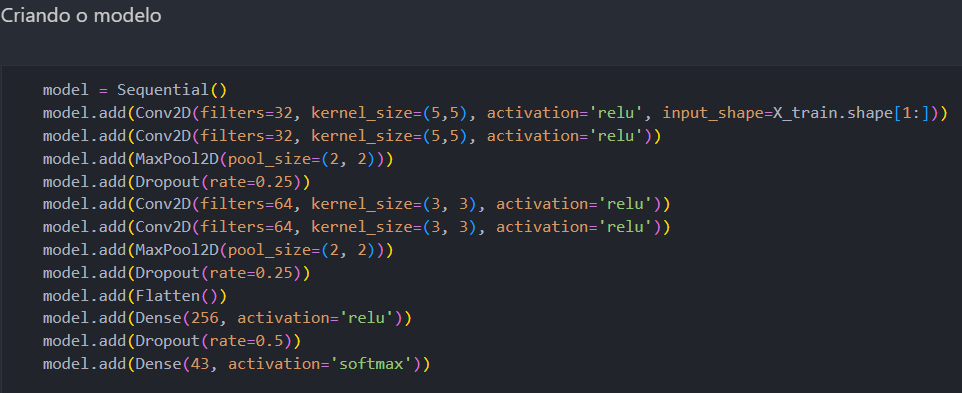
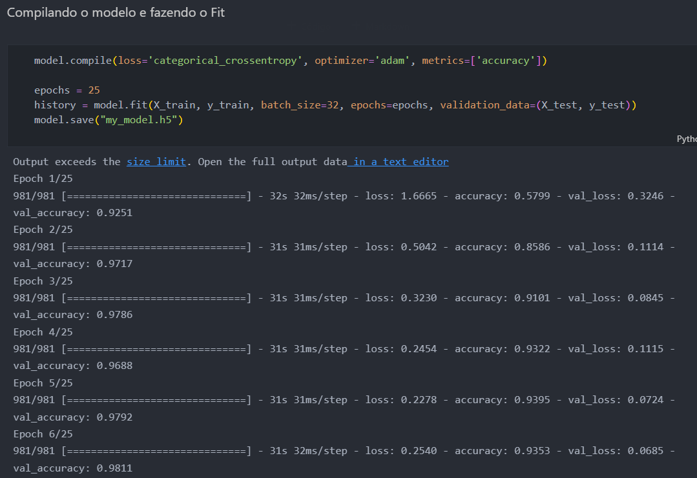
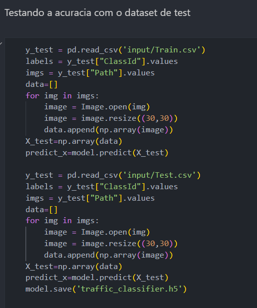

Inteligência Artificial
Criação do modelo da IA
Para iniciarmos a IA, pegamos as imagens de placas de trânsito dadas pelo dataset, fazendo processamento destas e transformando-as em um tipo de data aceita pelo keras ( biblioteca usada para deep learning )
Após tratadas, para podermos fazer melhores predições, fazemos um processo chamado "One Hot encoding", que categoriza estas variaváveis em um tipo de formulario para facilitar o algoritmo.
 Implementação do modelo
Criamos o modelo do tipo "Sequencial", para podermos inserir camadas da rede neural em série, utilizando as funções de ativação relu e softmax. Por fim, aplicado o fit e testado a acurácia de nosso modelo.
 Testando a acurácia do modelo
Ao final do fit, salvamos o modelo e testamo-os com os dados dos CSVs de train e Test, e criamos um novo modelo testado.
